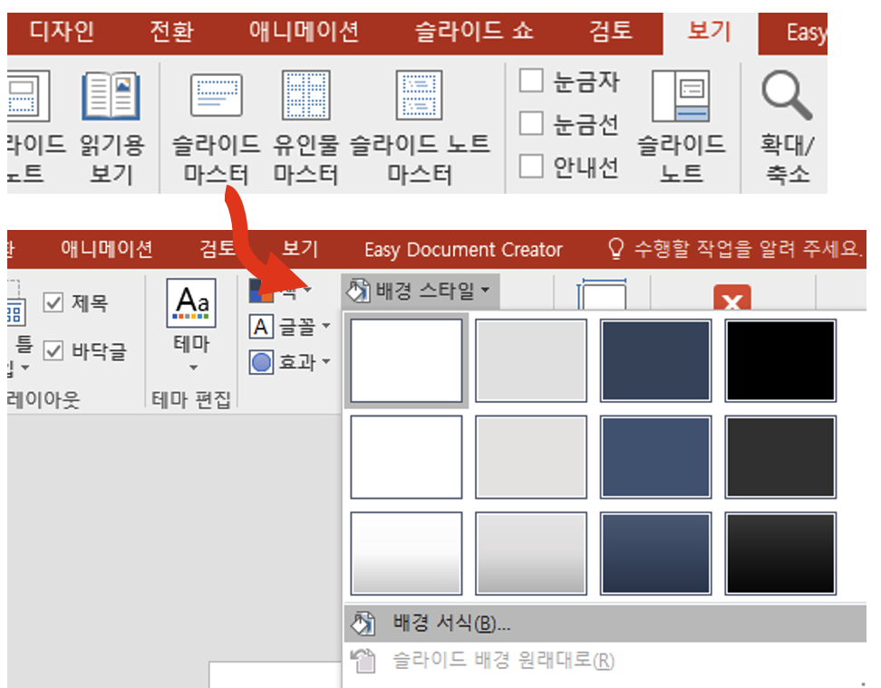
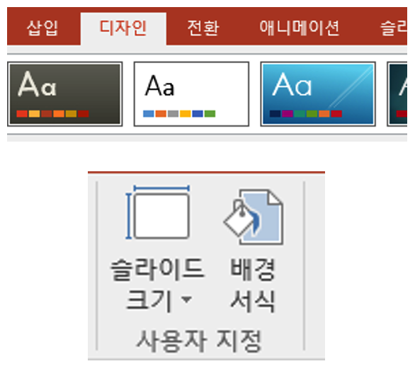
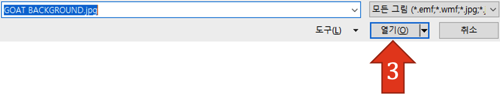
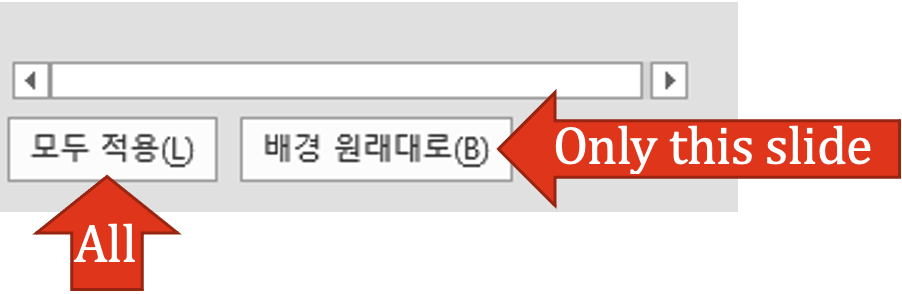

Slide Master
PROS: This is quick, just a copy/paste and it'll appear on all the slides you want.
CONS: If someone knows about SlideMaster and doesn't want someone's crediting icon there… they can delete it.
We share a lot of materials across the internet and chatrooms, but sometimes the practices of protecting work and giving credit where due gets swept under the rug. Here is a guide to help you retain some form of control and ownership over your own work.
You may have noticed that some users choose to 'watermark' their materials. When watermarked, you and others are able to edit the actual content. You'll be able to swap vocabulary, photos, instructions, etc… there is simply a 'signature' in the background of your files.
However, like other methods, this is not foolproof. People can edit watermarks out and pass it off as their own. Depending on method, you'll have to think a bit more about the design (for both in this guide, you can accidentally cover your mark depending on location).
Why Watermark: You want users to be able to edit but still have a distinct signature to mark your work.
Note: Need a Printable Version? Click here for a PDF
PROS: This is quick, just a copy/paste and it'll appear on all the slides you want.
CONS: If someone knows about SlideMaster and doesn't want someone's crediting icon there… they can delete it.
On the PPT menu, click on 보기 (view) then 스라이드마스터
You'll see one slide template with sub-slides underneath. ANYTHING you add to the 'parent' slide will appear on the children slides. If you want ALL slides to contain your icon, put it on the parent slide.
I prefer to just have it on the title slide, so I put it on the Title template. Copy and paste the image wherever you like on the slide, and it'll be on the background, uneditable from the basic slide view.
Click the arrow on the top right to exit SlideMaster
Some ppts' watermark cannot be removed without replacing the background. If you have photoshop, illustrator, etc. you can create whatever you'd like. THIS following is for those who wish to stay within PPT:
Create NON-MOVING or changing parts of your slides.
Example: I've made two main backgrounds for my PPT that I personally don't want edited. You cannot animate any of this, but alas, this is for tutorial purposes.
Save the presentation as images.
Click on File -> Save As -> JPEG
Congratulations! You can now set it as a ppt background.
Some ppts' watermark cannot be removed without replacing the background. If you have photoshop, illustrator, etc. you can create one. You don't HAVE to use SlideMaster. I simply recommend as it makes adding new slides easier. THIS following is for those who wish to stay within PPT:
SlideMaster: 보기 -> 스라이드마스터 -> 배경 스타일
Regular: 디자인 -> 배경 서식
1. In the side panel, check the third option 그림또는 질감 재우기
2. Click 파일
3. Select the background you made
4. On the bottom of the column, choose to make the background ALL or only that slide.
